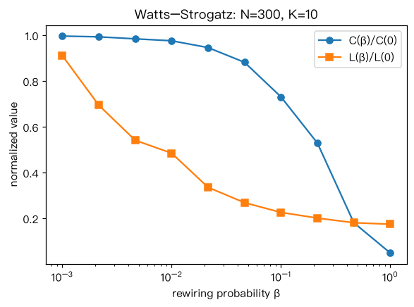
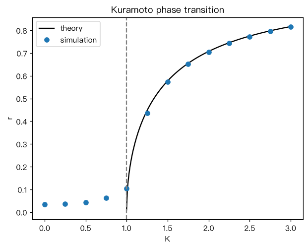
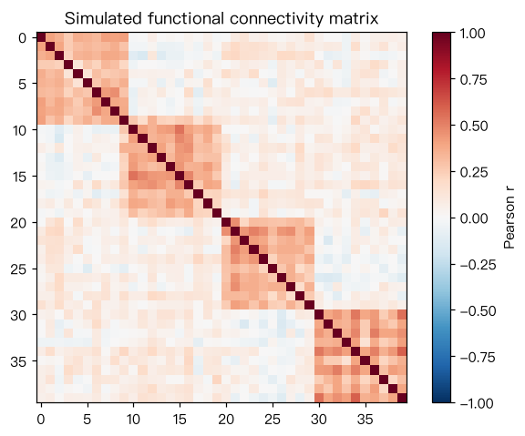
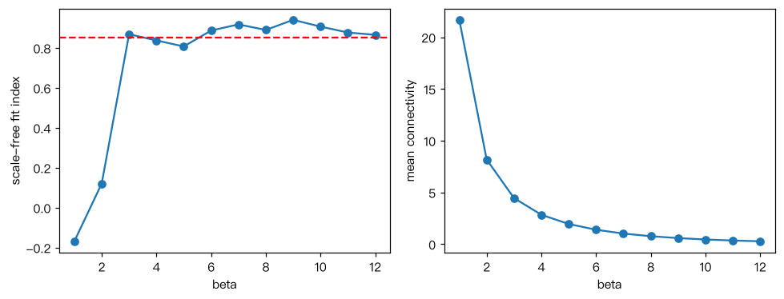
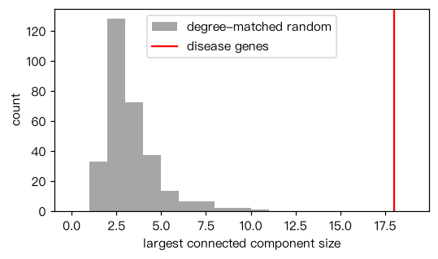

“小世界”网络的集体动力学
Collective dynamics of 'small-world' networks
Watts DJ, Strogatz SH
用随机重连在规则网格与随机图间插值，发现少量捷径即可使网络兼具高聚类与短路径，并在真实网络中验证。
复杂网络的理论、动力学与控制，以及脑网络、症状网络、分子网络和网络医学中的研究方法：数据怎样得到、网络怎样构建、算法怎样使用、结果怎样解释、结论有哪些证据支持。
七个相互关联的领域，从网络的数学表示到网络医学。
按讲次组织的系列讲解，每集七到十二分钟，配中文字幕和文字稿。
脑网络、症状网络、分子网络与网络医学的专题都沿着同一条链展开。
改变参数，观察网络结构与动力学怎样随之变化；每个可视化都嵌在相应的知识页面中，也可以导出图片与参数。
每个算法都有完整、可运行的 Python 示例，附输出图与解读。

复现 Watts–Strogatz 的经典曲线小世界与无标度网络模型 按定义计算模块度社团结构与社区发现
按定义计算模块度社团结构与社区发现 生成函数求解点渗流与边渗流，并与 Newman–Ziff 模拟比较网络鲁棒性、渗流与级联失效
生成函数求解点渗流与边渗流，并与 Newman–Ziff 模拟比较网络鲁棒性、渗流与级联失效
全连接 Kuramoto 模型的同步相变同步与协同动力学
从 ROI 时间序列估计功能连接矩阵脑连接组：结构与功能连接 相关网络与偏相关网络症状网络与网络精神病学
相关网络与偏相关网络症状网络与网络精神病学
软阈值幂次 β 的无标度拟合准则基因调控网络推断与共表达分析
疾病基因是否聚成模块（最大连通分支 + 度匹配随机基线）疾病模块、网络邻近度与药物重定位按科学主题组织的论文精读：研究问题、设计、方法、结论、证据与局限。
Collective dynamics of 'small-world' networks
Watts DJ, Strogatz SH
用随机重连在规则网格与随机图间插值，发现少量捷径即可使网络兼具高聚类与短路径，并在真实网络中验证。
Emergence of scaling in random networks
Barabási A-L, Albert R
报告多个真实网络的度分布尾部近似幂律，并提出“增长 + 优先连接”模型，用平均场方法推出指数 γ=3。
Complex brain networks: graph theoretical analysis of structural and functional systems
Bullmore E, Sporns O
系统梳理用图论分析脑结构与功能网络的流程与发现，总结小世界、枢纽、模块化等跨尺度、跨模态反复出现的特征。
Controllability of complex networks
Liu Y-Y, Slotine J-J, Barabási A-L
把结构可控性转化为最大匹配，算出最少驱动节点数，发现其主要由度分布决定，且驱动节点倾向于避开枢纽。
Network analysis: an integrative approach to the structure of psychopathology
Borsboom D, Cramer AOJ
系统阐述把精神障碍看作症状之间因果相互作用的网络观点，综述症状网络的构建、分析和模拟方法及其临床意义。
Uncovering disease-disease relationships through the incomplete interactome
Menche J, Sharma A, Kitsak M, Ghiassian SD, Vidal M, Loscalzo J, et al.
给出不完整互作组中疾病模块可被观测的条件，提出网络分离度，用以预测疾病间的生物与临床相似性。